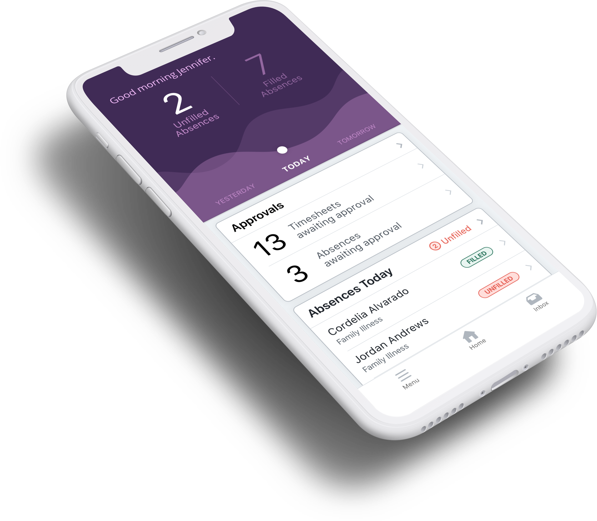
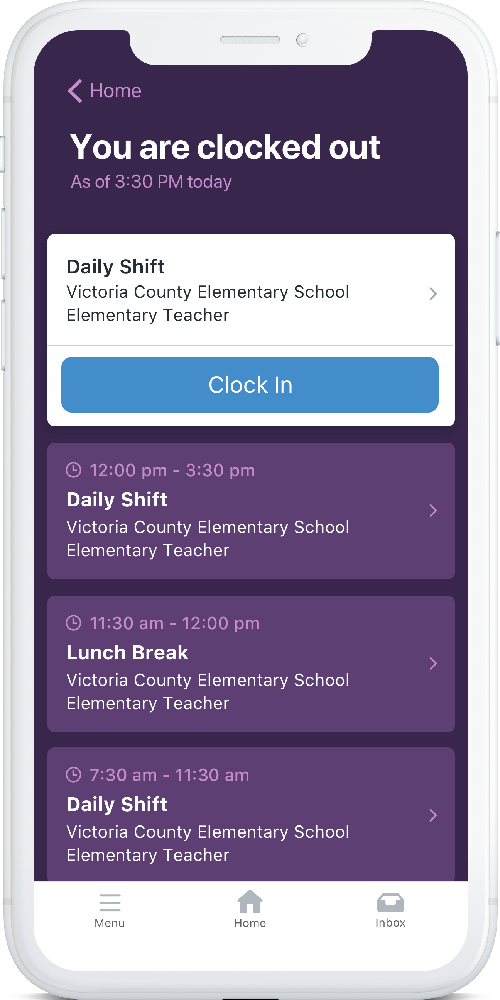
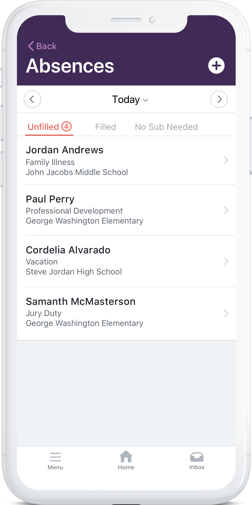

Background
Frontline Education provides educational institution with a suite of powerful Human Campital Management applications.

In 2015, we kicked-off a mobile initiative by conducting a series of Design Sprints. During these sprints, a vision was set for an app that allowed users, both educators and administrators alike, to quickly and easily complete frequent, lightweight touchpoints that, historically, had to be done on a computer. Interactions like requestion time off, clocking in or out, submitting timesheets, and more were now easier than ever to complete.
My Role
I had the opportunity to be a part of the vision-casting for this project, participating in, and at times facilitating, the design sprints. From there, I was tasked with the role of primary product designer on the project.

As primary designer, I was responsible for working closely with the Mobile Product Manager as well as Product Managers for the applications we were integrating to research, prioritize, conceptualize, and design the overall user experience and interface of the application. I also spent time acting as Scrum Master for the mobile development team.
